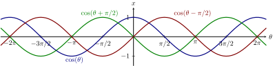

Review of Sinusoidal Signals
How do we recognize lagging and leading on a graph?
In Figure timedelaysig we observe two step functions, V(t) and V(t-T). Function V(t) step occurs
at t=0, and V(t-T) step occurs at t=T. The function V(t-T) is shifted to
the right, the step occurs later, at t=T, and is, therefore, lagging function
V(t).
Similarly, if the step function is V(t+T), the function v(t) is shifted to the left. The
step occurs earlier at t=-T, and therefore V(t+T) is leading V(t).
What if we have a sinusoidal signal? We will observe a specific point on the signal,
such as the maximum value, and determine if it shifted left or right on the
graph.
When the phase of a signal is positive as in Figure sinPlus45Ph , we say that the signal is leading
with respect to the signal , because it is shifted to the left for (). The maximum of
the function now occurs at t=-T, or , and we can write the new function as the
original sinusoidal function V(t) shifted left for a time T, V(t+T). The phase of the
signal is , and the time-delay is T.
When the phase of a signal is negative as in Figure
sinMinus45Ph,
sinMinus45T, , we say that the signal is
lagging with respect to the signal , because it is shifted to the right for (), or . The
lagging function’s peak occurs later in time, and therefore it is lagging. The phase of
the signal is .
Sinusoidal signal is given. Compared to , signal
Leads signal Lags signal
Observe three signals in Figure below

Which of the following functions leads ?
The green signal. The red signal. The
blue signal.